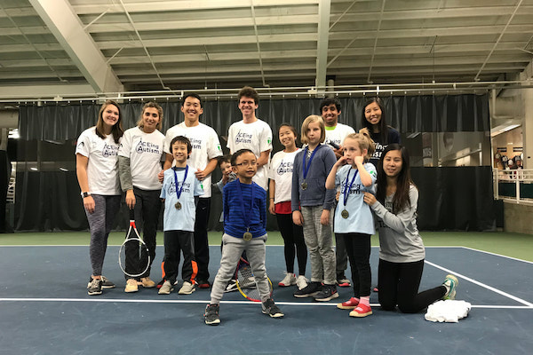
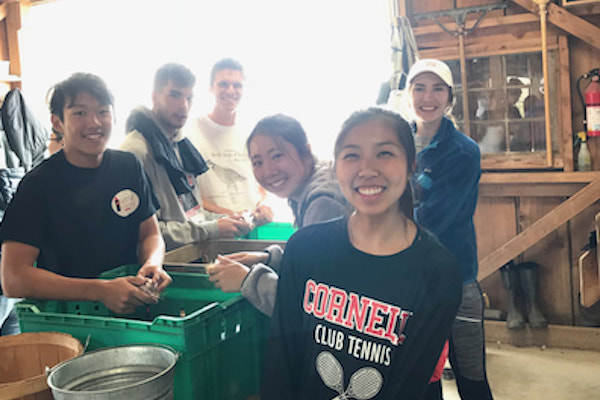

Service
Every year, Cornell Club Tennis gives back to the community by participating in volunteering events and programs. Our two main community service events are ACEing and Into the Streets. If you would like to learn more about our programs, continue reading:
ACEing Autism
What is ACEing?
ACEing is a program Cornell Club Tennis participates in that introduces kids on the Autistic Spectrum to tennis. The kids typically range from the age of 5-12, and they learn essential tennis skills such as groundstrokes and volleys while bonding with our volunteers and each other.
When is it?
The program is held at Reis Tennis Center, typically from 10-11 am on Saturdays.
Want to Get Involved?
If you would like to get involved with this great program, email our Philanthropy Chair Haley Mathews at hcm58@cornell.edu.
Want to Learn More?
Visit ACEing's website here.
Into the Streets
What is Into the Streets?
Into the Streets is Cornell's biggest public service event. Over 500 volunteers participate, volunteering at agencies that contribute to the welfare of the local Ithaca community, such as farms or local businesses.
How do we volunteer?
Into the Streets is a great program that allows different clubs or groups to volunteer together. This past year, we had a group of 7 members led by our philanthropy chair, Caroline Zhou, participate at West Haven Farm, helping the local farmers plant and peel garlic cloves! They learned about sustainable farming techniques and got to try fresh produce ranging from cherry tomatoes to apples, all while helping the local community!
Want to know more?
If you want to sign up to volunteer for Into the Streets, whether it's individually or as a club, visit their webpage at orgsync.rso.cornell.edu/org/cornellintothestreets.